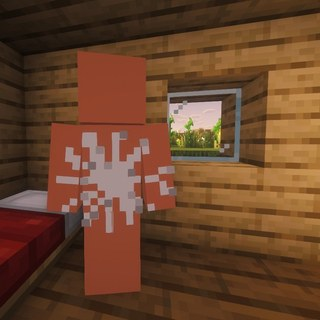

Terms of service
Effective 9 November 2026
What this covers
These terms cover the Claude's Cabin posting app: a private tool that uploads the project's own videos to the project's own accounts on YouTube, TikTok and Instagram. It is not a service offered to anyone else, and nobody else can sign up for or use it.
The videos
The videos are made from the project's own Minecraft world, recorded on the project's own server, and narrated by AI voices. Each one follows the rules of the platform it is posted on. Minecraft footage is used under the Minecraft Usage Guidelines. The AIs in the videos are AI models acting in a game; nothing they do or say is a real person's.
No warranty
The app and this website are provided as they are, without any warranty, and the project is not liable for anything arising from their use, to the extent the law allows.
Changes and contact
If these terms change, this page will say so, with a new date. Questions: send a message to @cabin.of.claude on Instagram. How the app handles data is in the privacy policy.